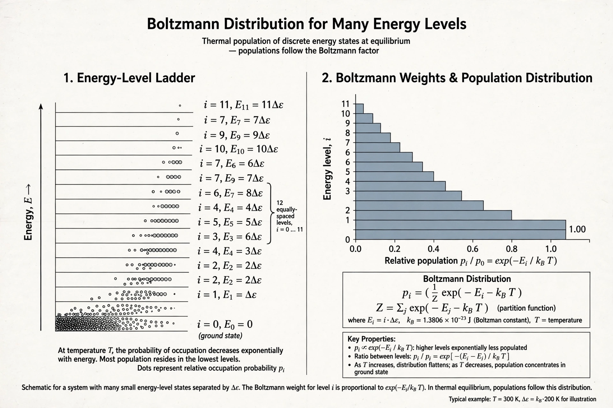

Partition function (statistical mechanics)
| Partition function | |
| Field | Statistical mechanics |
|---|---|
| Symbol | Z |
| Introduced by | Ludwig Boltzmann; J. Willard Gibbs |

In statistical mechanics, the partition function Z is a function of temperature and other parameters, such as volume, that encodes the statistical properties of a system in thermodynamic equilibrium. Most aggregate thermodynamic variables of the system, such as total energy, free energy, entropy and pressure, can be expressed in terms of the partition function or its derivatives.
Canonical partition function
For a system in contact with a heat bath at temperature T, the canonical partition function is the sum over all microstates s of the Boltzmann factor: Z = Σs e−Es/kBT, where Es is the energy of state s and kB is the Boltzmann constant. The probability of the system occupying state s is proportional to its Boltzmann factor divided by Z — hence the name, since Z "partitions" probability among the states (from the German Zustandssumme, "sum over states").
Thermodynamic quantities
The Helmholtz free energy is F = −kBT ln Z. Mean energy, entropy, pressure and heat capacity follow by differentiation. Related ensembles use related functions: the grand partition function for systems exchanging particles, and the isothermal–isobaric partition function at constant pressure.
See also: Boltzmann distribution, Helmholtz free energy.